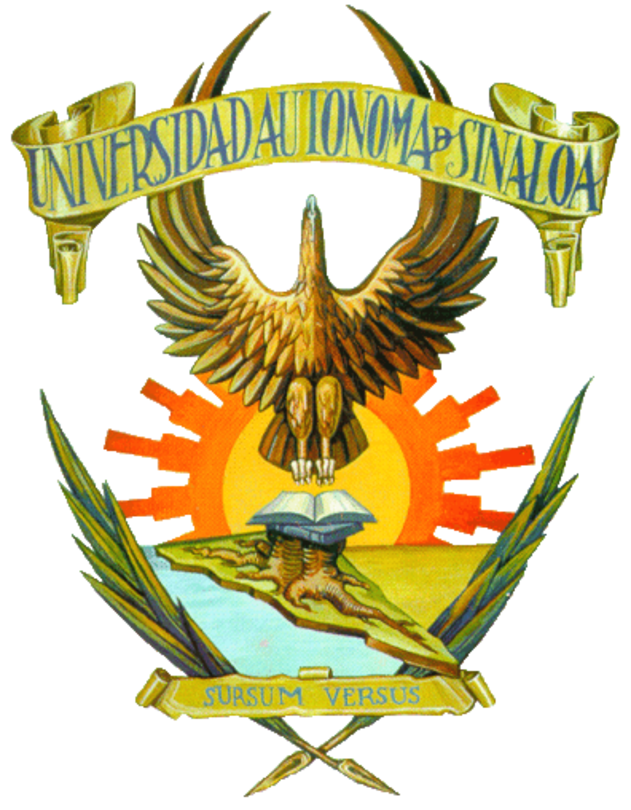
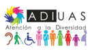

Identificación y perfil de apoyo
Conocemos las necesidades de cada estudiante y construimos su perfil de apoyo, con los ajustes razonables que requiere.


La Universidad Autónoma de Sinaloa, en coordinación con Secretaría Académica Universitaria y a través del Programa ADIUAS, responde a las necesidades sociales con calidad educativa, y con ello estar a la vanguardia de las políticas internacionales y nacionales en el tema de educación como una prioridad institucional.
"eliminando las barreras para el aprendizaje y apoyando la formación integral e inclusiva"
La Universidad Autónoma de Sinaloa (UAS), a través de la Secretaría Académica de la Universidad (SAU) y el Programa de Atención a la Diversidad (ADI-UAS), invita las diversas actividades y eventos que se estarás desarrollando en los próximos días en la Jornada de Inclusión y Accesibilidad, dentro del marco del Día Internacional de las Personas con Discapacidad.
Conocemos las necesidades de cada estudiante y construimos su perfil de apoyo, con los ajustes razonables que requiere.
Una tutora o un tutor de apoyo especializado da seguimiento al plan en su propia unidad académica.
Docentes, familias y asesores se suman al plan con orientaciones claras sobre qué hacer.
Cursos y actividades para construir clases, materiales y evaluaciones accesibles.